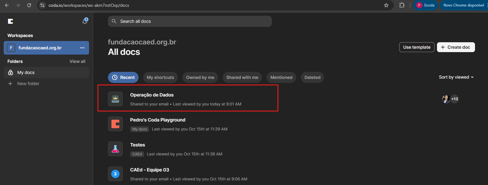
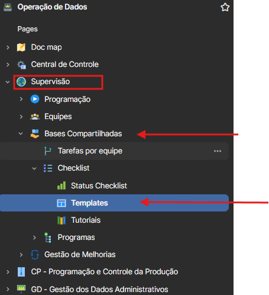
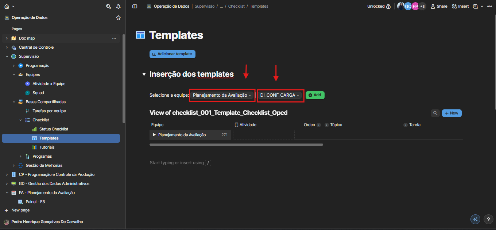
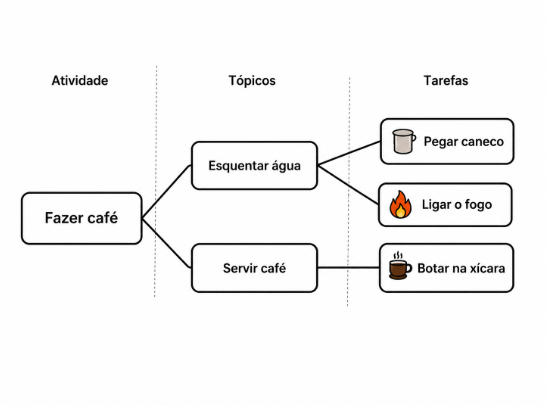

📋 COMO CADASTRAR UM CHECKLIST
Faça login no sistema CODA utilizando suas credenciais.
Na lista de documentos, clique em "Operação de Dados" para acessar a área de trabalho principal.

Clique no documento "Operação de Dados" na lista de documentos disponíveis.
No painel de navegação esquerdo, siga o caminho hierárquico:
Esta é a área principal para gerenciamento de todos os modelos de checklist, onde você poderá visualizar, criar e modificar templates existentes.

Checklist > Templates">A imagem mostra como navegar pela estrutura de pastas até chegar na seção Templates, destacando cada etapa do caminho.
Na seção de Templates, selecione a equipe e qual atividade deseja inserir um checklist.

Ao criar checklists, eles seguem uma hierarquia em 3 níveis: Atividade > Tópicos > Tarefas.
Para ficar mais claro, pense na Atividade "Fazer café":
- Atividade: É o objetivo principal (Ex: Fazer café).
- Tópicos: São as grandes etapas para atingir o objetivo (Ex: Esquentar água e Servir café).
- Tarefas: São as ações curtas e práticas de cada etapa (Ex: Pegar caneco, Ligar o fogo, Botar na xícara).

Tópicos (Esquentar água, Servir café) -> Tarefas" style="display: block; margin: 0 auto;">- 🔸 Selecione uma equipe: Ao selecionar a equipe e a respectiva atividade na qual deseja cadastrar uma tarefa, o botão verde adicionará uma nova linha à atividade. Em seguida, será possível editá-la de acordo com o tópico ao qual pertence. Caso a atividade ainda não exista, ela será criada automaticamente.
- 🔸 Expandir Seção: Clique para expandir e visualizar as atividades da equipe selecionada
- 🔸 Selecionar Atividade: Escolha a atividade desejada e expanda para ver seus tópicos e tarefas
- 🔸 Adicionar Nova Tarefa: Defina o tópico que melhor se encaixa a nova tarefa, ou crie um tópico novo, adicione o título e complete com a descrição detalhada
Após adicionar tópicos e tarefas, você pode reorganizar a ordem de exibição ou remover itens que não são mais necessários.
- 🔸 Ordenação Automática: O sistema numera automaticamente as tarefas conforme são adicionadas
- 🔸 Reordenação Manual: Clique e arraste qualquer tarefa com o mouse para a posição desejada
- 🔸 Atualização Automática: Os números de ordem se ajustam automaticamente após o movimento
- 🔸 Exclusão de Atividades: Clique com o botão direito na linha e escolha a opção "delete row everywhere"
- 🔸 Confirmar Exclusão: Confirme a ação quando solicitado pelo sistema
Vídeo demonstrando como reordenar atividades arrastando com o mouse e como excluir itens usando o menu contextual